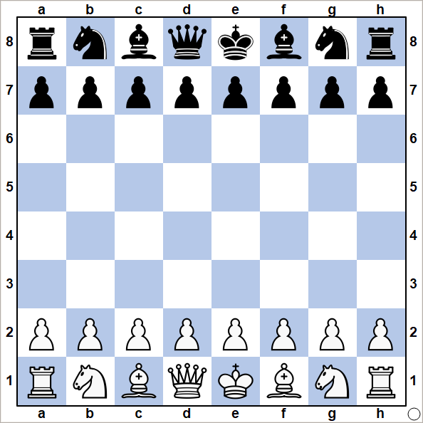
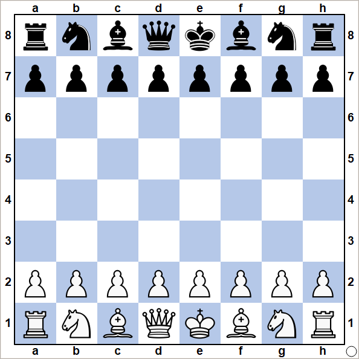

Giới thiệu
Cờ vua là một trò chơi trí tuệ có lịch sử hàng nghìn năm, được xem như một trong những môn thể thao tư duy phổ biến và lâu đời nhất thế giới.
Trò chơi này xuất phát từ Ấn Độ vào khoảng thế kỷ thứ 6 và đã lan rộng ra khắp các châu lục, trở thành một phần không thể thiếu trong văn hóa và giáo dục ở nhiều quốc gia.
Bàn cờ vua gồm 64 ô vuông được chia thành hai màu xen kẽ, trắng và đen, với mỗi người chơi sở hữu 16 quân cờ, bao gồm 1 Vua, 1 Hậu, 2 Xe, 2 Tượng, 2 Mã và 8 Tốt.
 
